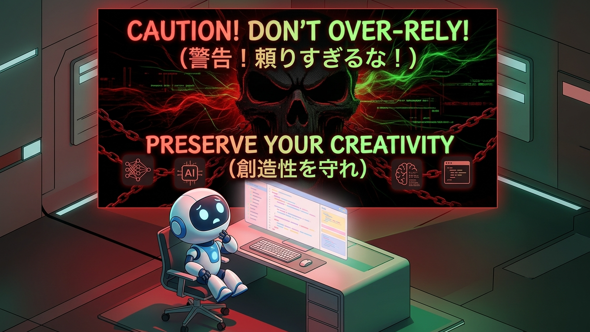

※画像は生成AIを使用して作成
「コード生成AIって無料で使えるの？」
「初心者でも使えるおすすめツールが知りたい」
近年、コード生成AIの進化により、プログラミングはより身近なものになりました。特に「無料で使えるコード生成AI」を探している初心者の方は多いのではないでしょうか。
しかし一方で、「AIは危険ではないのか？」「本当にスキルが身につくのか？」といった不安もあります。
結論から言うと、無料のコード生成AIでも十分に学習・開発は可能であり、初心者にとって最強のサポートツールです。ただし、使い方を間違えると成長が止まるリスクもあります。
本記事では、コード生成AIのおすすめ（無料）ツールの考え方を含め、メリット・デメリットや正しい使い方をわかりやすく解説します。
コード生成AIは無料で使える？初心者向け結論
結論として、コード生成AIは無料でも十分に活用可能です。現在は多くのAIツールが無料プランを提供しており、以下の基本機能は無料で使えます。
- コードの自動生成
- エラー解説
- 学習サポート
ただし重要なのは、「どのツールを使うか」よりも「どう、使うか」です。
コード生成AIとは？初心者でもわかる仕組み
コード生成AIとは、自然言語で指示するだけで、AIがプログラムコードを作成してくれるツールです。
例えば、「ToDoリストを作りたい」と入力するだけで、コードの雛形が生成されます。
AIでできること
- Webアプリの作成
- コードの自動生成
- エラーの原因分析
AIでできないこと
- 完全な設計判断
- 複雑な要件への対応
そのため、AIはあくまで補助ツールとして使うのが重要です。
コード生成AI（無料）のメリット
学習スピードが大幅に上がる
無料のコード生成AIでも、コード例や解説をすぐに得られるため、学習効率が大きく向上します。
初心者でもすぐに開発できる
雛形を自動生成できるため、ゼロから書く必要がなく、初心者でもすぐに動くアプリを作れます。
作業効率が上がる
繰り返し作業をAIに任せることで、開発スピードが向上します。
エラー解決をサポートしてくれる
エラー内容を入力するだけで、原因や修正方法を提案してくれます。
コード生成AIのデメリットと注意点
間違ったコードが生成されることがある
無料・有料に関わらず、AIは完璧ではありません。生成AIのチャットの下にも「回答は必ずしも正しいとは限りません」と記載があります。
セキュリティリスクがある
脆弱性を含むコードが生成される可能性があります。知識がついてくればおかしい点などに気付き、コードの書き換えなど出来ますが、初心者には難しいと思います。
例えばですが、2つの生成AIを使用し、片方でコードを生成し、もう片方でコードを参照し、訂正されれば「なぜ？訂正したのか」を確認し、自分の知識を高めていくことでコードをより良きものに仕上げる・自分の知識を高めると一石二鳥です。
AIに依存すると成長しない
コピペだけではスキルは身につきません。疑問に思うことは常に生成AIに聞き、コード生成時はAIを「先生」としてみるようにしましょう。
初心者におすすめのコード生成AIの選び方【無料】
※画像は生成AIを使用して作成
無料のコード生成AIを選ぶ際は、以下を意識しましょう。
日本語対応しているか
初心者は日本語で使えるツールがおすすめです。
解説機能があるか
コードだけでなく、説明してくれるAIを選びましょう。
無料でどこまで使えるか
制限の範囲を確認することが重要です。「無料×使いやすさ」で選ぶのがポイントです。
迷ったら「ChatGPT」がおすすめ
初心者に最もおすすめのコード生成AIは、ChatGPTのように「コード生成＋解説」ができるツールです。
ChatGPTのメリット
- コードの意味をわかりやすく解説してくれる
→ 「このコード何？」と聞くだけで丁寧に説明 - エラーの原因と修正方法を教えてくれる
→ 初心者がつまずきやすいポイントをすぐ解決 - 日本語でそのまま質問できる
→ 英語が苦手でも問題なし - コードの改善・最適化も提案してくれる
→ より良い書き方を学べる - 学習の“先生”として使える
→ わからないことをその場で解決できる
こんな使い方がおすすめ
- 「このコードの意味を初心者向けに説明して」
- 「エラーの原因を教えて」
- 「もっと簡単な書き方にして」
このように使うことで、単なるツールではなく“学習パートナー”として活用できます。
初心者は「ToDoリストアプリ」から作るのがおすすめ
コード生成AIを使い始めるなら、ToDoリストアプリから作るのが最適です。
なぜToDoアプリがおすすめ？
- シンプルな構造（追加・削除・表示）
- AIで簡単に生成できる
- 学習に必要な基礎が詰まっている
初心者でも「動くアプリ」をすぐに体験できます。
ToDoアプリで学べること
- プログラムの基本構造
- データの扱い方
- UI操作の仕組み
さらに、機能追加をすることで理解が深まります。
AIを使った学習手順
- AIにコードを作らせる
- 実際動かしてみる
- 内容を理解する
- 機能を追加する
この流れが最短でスキルを伸ばす方法です。
よくある失敗例と対策
コードをそのまま使う
対策：必ず理解する
AIを鵜呑みにする
対策：検証する
エラーを放置する
対策：AIに質問する
まとめ｜無料のコード生成AIは初心者の最強ツール

※画像は生成AIを使用して作成
コード生成AIは無料でも十分に活用でき、初心者にとって非常に強力な学習ツールです。
ただし重要なのは、以下の2点です。
- 正しく使うこと
- 理解しながら使うこと
また、ToDoリストアプリのようなシンプルな題材から始めることで、AIの力を最大限に活かしながら効率よくスキルを身につけることができます。
「AIに任せる」のではなく、「AIで学ぶ」ことが成功のポイントです。